Note : First Step Configer WooCommerce >> Settings >> Product >> Display Catalog Images/Product Image Recommended Stander Size (275x335)
Sparklestore Pro
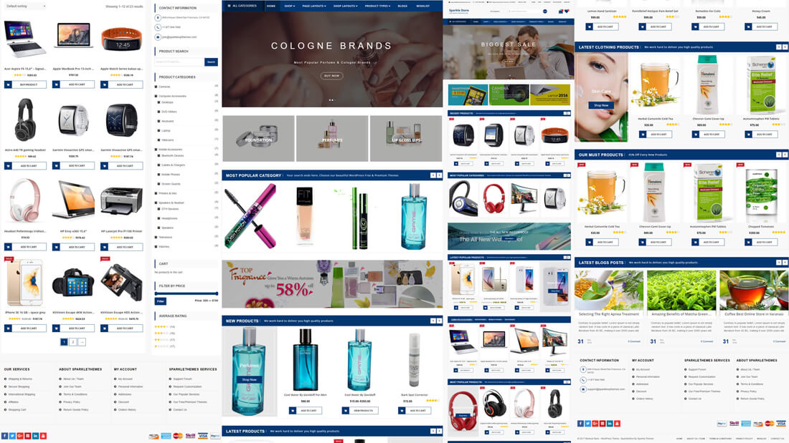
There are two methods to install Sparklestore Pro theme. You may either upload the zipped theme file using the WordPress theme installer (Recommended), or you can upload the unzipped theme folder via FTP (Advanced).
Method 1 ( Recommended) : Install Using the WordPress Theme Installer
-
Log into your WordPress site and opens the Administration Panel.
-
Go to Appearance > Themes in the WordPress Dashboard.
-
Click on the Add New button.
-
Search for the Sparklestore Pro
-
Select the Sparklestore Pro theme
-
Click Install Now
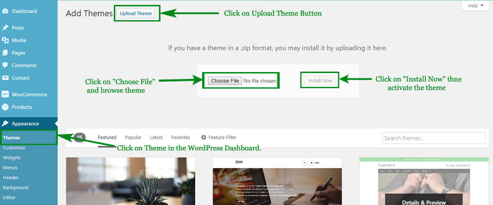
Method 2: Install Using File Transfer Protocol (FTP)
-
Unzip “sparklestore-pro.zip” file on your computer.
-
Login using FTP client to access your host web server.
-
Locate the wp-content folder in your WordPress install files.
-
Upload the un-zipped SparkleStore Pro folder into the: wp-content/themes folder.
Activate the theme
-
Log in to the WordPress Administration Panel.
-
Go to Appearance > Themes in the WordPress menu
-
Hover over the theme thumbnail and click the Activate button.
To install a plugin in your WordPress admin panel and follow the following steps.
Plugin Installing Method
- Log into your WordPress site and opens the Administration Panel.
- Click Navigate to Plugins > Add New in the WordPress Dashboard.
- Search for the name of the plugin you wish to install which will return a list of potential plugins.
- Click Details to read more about a plugin.
- Click “Install Now” if you wish to install the plugin.
- It may ask if you are sure, and you may proceed. The installation will commence once you confirm to proceed.
- After the plugin is downloaded. Go to Plugins>Installed Plugins. Click “Activate Plugin” to make it available for use.

Recommended Plugins : We recommend you to download the following plugins when necessary:
- Jetpack by WordPress.com, by: Automattic (The plugin provides a variety of complementary features for your Theme.)
- Regenerate Thumnails by Alex Mills (Viper007Bond) (If you have existing content, this will help you update your image thumbnails sizes.)
- WooCommerce by woocommerce.com, by: Automattic (The most customizable eCommerce platform for building your online siness. Get started today for free.)
- YITH WooCommerce Quick View by yithemes.com, by: YITHEMES (This plugin adds the possibility to have a quick preview of the products right from product list)
- YITH WooCommerce Compare by yithemes.com, by: YITHEMES (YITH WooCommerce Compare allows you to compare more products of your shop in one complete table.)
- YITH WooCommerce Wishlist by yithemes.com, by: YITHEMES (YITH WooCommerce Wishlist add all Wishlist features to your website. )
- WooCommerce Grid / List toggle by: James Koster (Adds a grid/list view toggle to product archives)
One Click To Install Demo Data
- Go to Appearance > Customize
- Click On > Import Data Demo Section
- Open Import Data Demo & Click on 'Import Demo' button
- When Your Demo Data have Import Sucessfully then you have to get one Popup Message(Demo Data Sucessfully Imported).
Note :- It might take few minutes for importing the demo contents so please have patience. Importing demo will override all the existing customizer themes options, widget value/settings which is irreversible so please proceed with caution. .
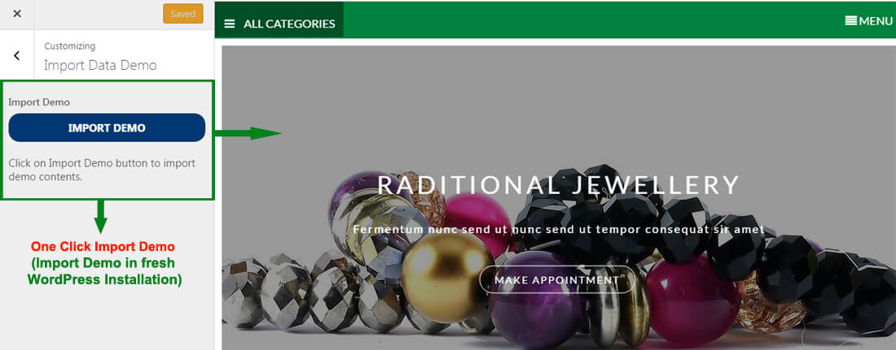
Configer Preloader Settings
- Go to Dashboard > Appearance > Customize
- Open > Customize > Preloader Settings
- Manage Preloader Settings/Options per as you choice
- Click on Button (Save & Publish)
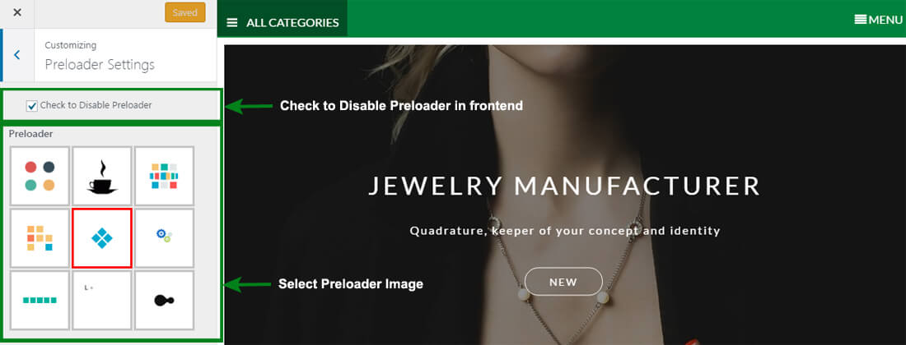
Logo/Site Title/Favicon (To set up Site Identity)
- Go to Appearance> Customize > General Settings > Site Identity
- Click Select logo by clicking Select Logo.
- Upload and select the desired image.
- Enter the Site Title and Tagline
- Check Display Header Text for the Site title and Tagline to appear on your homepage.
- Click Select Image under Site Icon
- Upload and select the desired image. (The Site Icon/ favicon is used as a browser and app icon for your site. The recommended Site Icon size is 512*512 pixels.)
- Click Save & Publish.

Website Container Max-Width
- Go to Appearance > Customize > General Settings > Website Container Max-Width
- Enter the Container Max Width
- Click Save & Publish.
Background Image
- Go to Appearance > Customize > General Settings > Background Image
- Click Select Image.
- Upload and Select a Background Image & Manage the image position & other settings
- Click Save & Publish.
WebLayout Options
- Go to Appearance > Customize > General Settings
- Open General Settings > WebLayout Options
- Select the WebSite Layout Options (Boxed Layout, FullWidth Layout) per as you want
- Click Save & Publish.
To set the Header Image
- Go to Appearance > Customize > General Settings > Header Image
- Upload the header image from the Add new image button. After selecting the header image, it will ask you to crop. If you like to crop it, then, you can crop else leave it as you want for your site to best suit it.
- Click Save & Publish.
Configer Theme Colors Settings
- Go to Dashboard > Appearance > Customize
- Open > Customize > Themes Colors Settings
- Manage Theme Primary Color, Header title colro & Background Colors Options per as you choice
- Click on Button (Save & Publish)
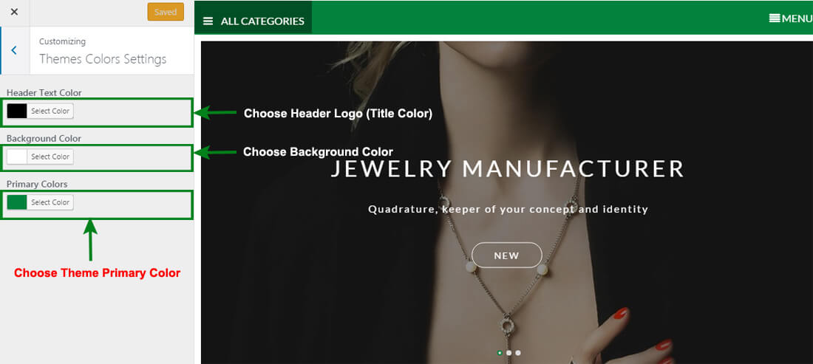
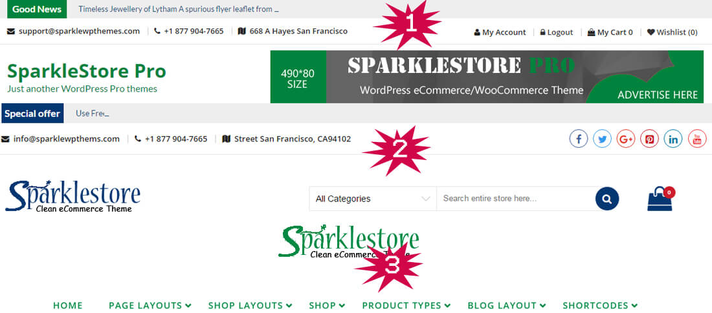
Configer Main Header Types Settings
- Log into your WordPress site and opens the Administration Panel.
- Go to Dashboard > Appearance > Customize
- Open > Main Header Settings > Main Header Types Settings
- Main Header Types Settings > Choose any one options as you want and enter header type related Information
- Click Save & Publish.
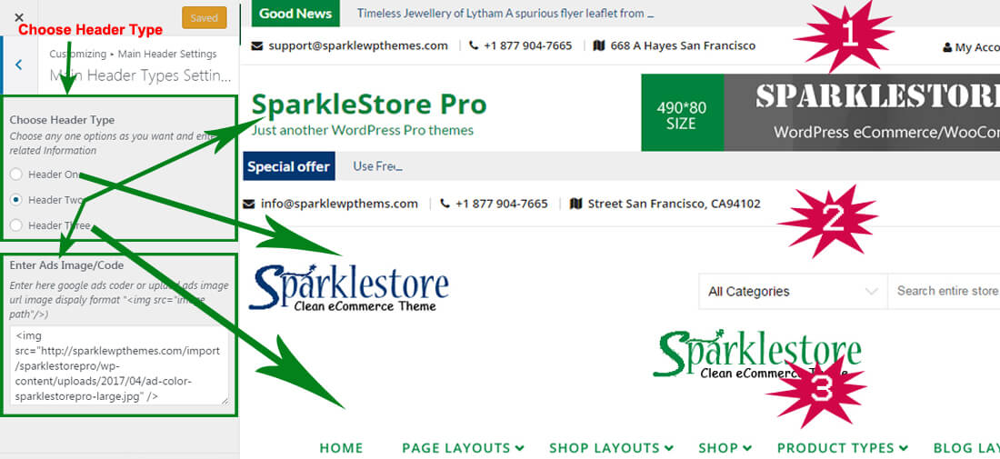
Configer Main Header General Settings
- Log into your WordPress site and opens the Administration Panel.
- Go to Dashboard > Appearance > Customize
- Open > Main Header Settings > Main Header General Settins
- Main Header General Settins > Manage all the options per as you want.
- Click Save & Publish.
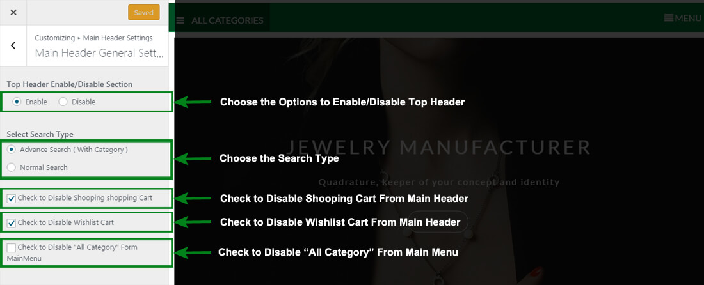
SparkleStore Pro Provides a "Home Page" template for your home page. Please follows these steps to configure your home page with "home page" template.
HomePage Setting
-
Log into your WordPress site and opens the Administration Panel.
-
Go to Dashboard > Pages > Add New
-
Enter the Page Title for the Page. You do not require to enter anything in the content section for creating a home page.
-
Select the Home Page Template from the Page Attributes section.
-
Click Publish
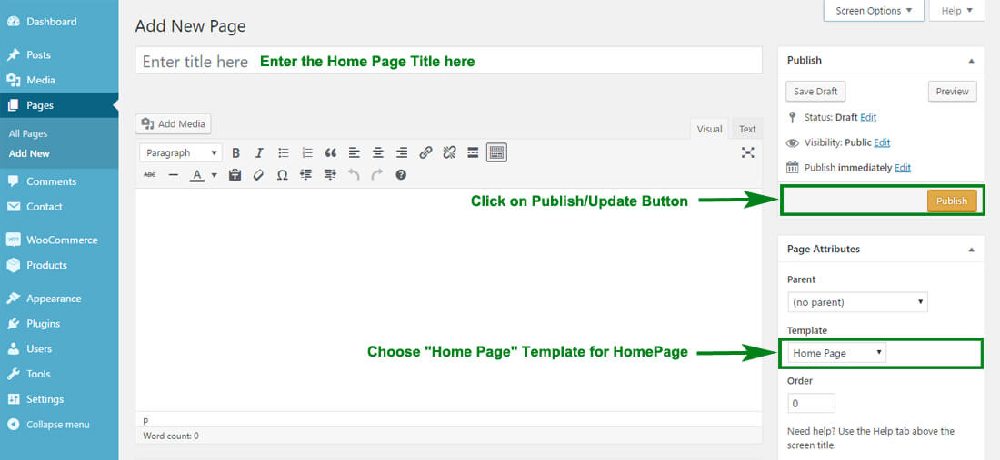
Configuring the front Page display setting
- Log into your WordPress site and opens the Administration Panel.
- Go to Appearance > Customize > Static Front Page.
- Select A static page under Front Page displays.
- Click Save & Publish.

Note : Remember that SparkleStore Pro WooCommerce themes fully base on Widget so first configer home page using widget.
Blogs Widget Section
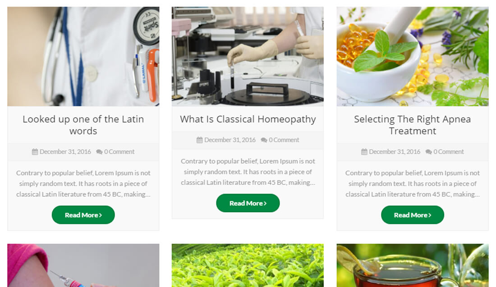
Configure Blogs Widget Section
- Log into your WordPress site and opens the Administration Panel.
- Go to Dashboard > Appearance > Widgets
- Open > Widgets > Sparkle : Main Widget Area or SP: Top FullWidth Widget Area (Pro) or SP: Buttom FullWidth Widget Area (Pro)
- Drag & Drop "SP : Blogs Widget Section" & Manage blogs widget section options per as you want
- Click Save > Publish.
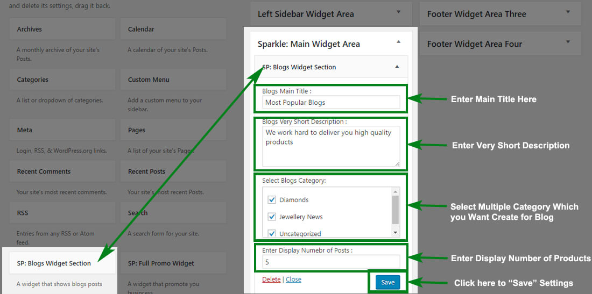
Configer Brand/Client Logo settings
- Log into your WordPress site and opens the Administration Panel.
- Go to Dashboard > Appearance > Customize
- Open > Brand/Client Logo settings
- Brand/Client Logo settings > Manage Options & Upload Brand/Client Logo Per as You Want.
- Click Save & Publish.
AND
Configure SP: Brands/Client Logo (Pro)
- Log into your WordPress site and opens the Administration Panel.
- Go to Dashboard > Appearance > Widgets
- Open > Widgets > Sparkle : Main Widget Area or SP: Top FullWidth Widget Area (Pro) or SP: Buttom FullWidth Widget Area (Pro)
- Drag & Drop "SP: Brands/Client Logo (Pro)" & Manage All SP: Brands/Client Logo (Pro) widget section options per as you want
- Click Save > Publish.
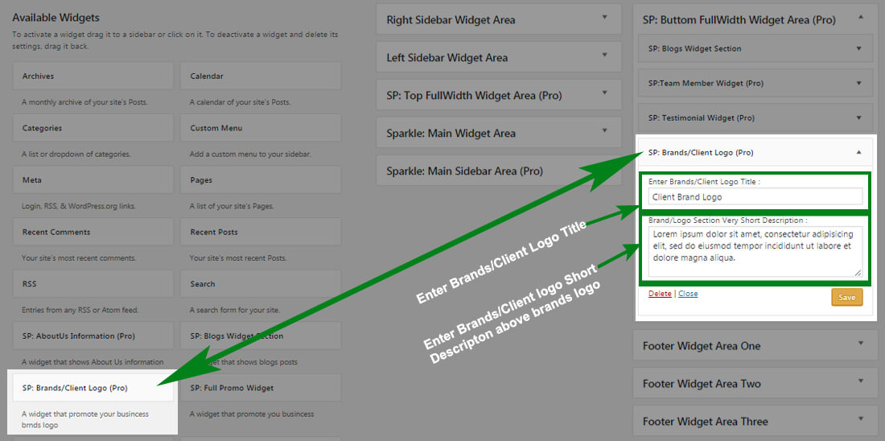
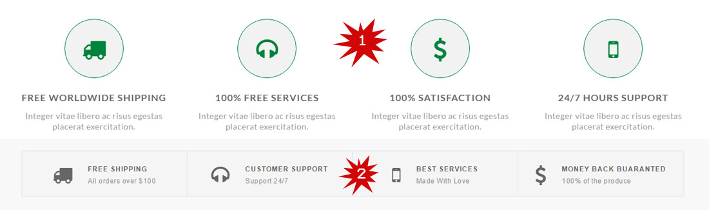
Services Area Settings
- Log into your WordPress site and opens the Administration Panel.
- Go to Dashboard > Appearance > Customize
- Open > Services Area Settings
- Services Area Settings > Manage all the options per as you want.
- Click Save & Publish.
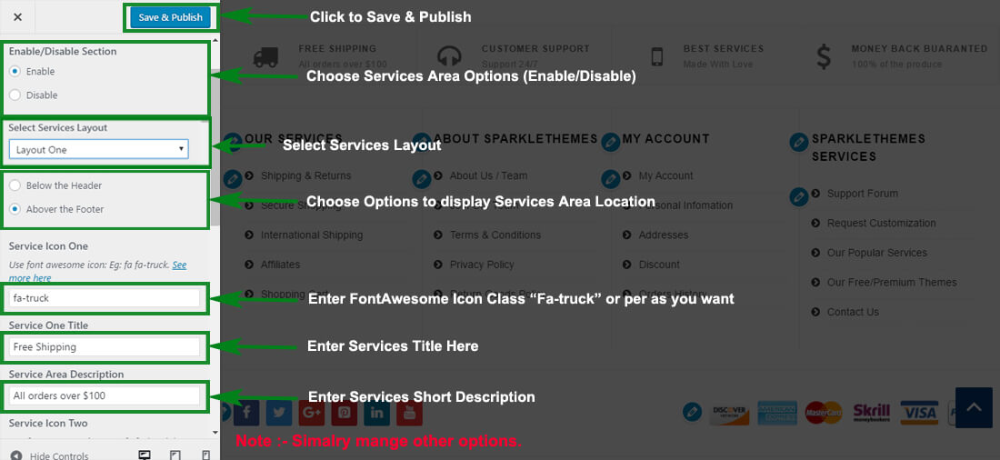
In this theme, we have included Advance Options of WooCommerce Archive/Category Product Single Page.
Products Pages Settings
- Log into your WordPress site and opens the Administration Panel.
- Go to Dashboard > Appearance > Customize > WooCommerce Settings
- Open > WooCommerce Settings > Products Pages Settings
- Products Pages Settings > Manage Product/Category Page all the options per as you want.
- Click Save & Publish.
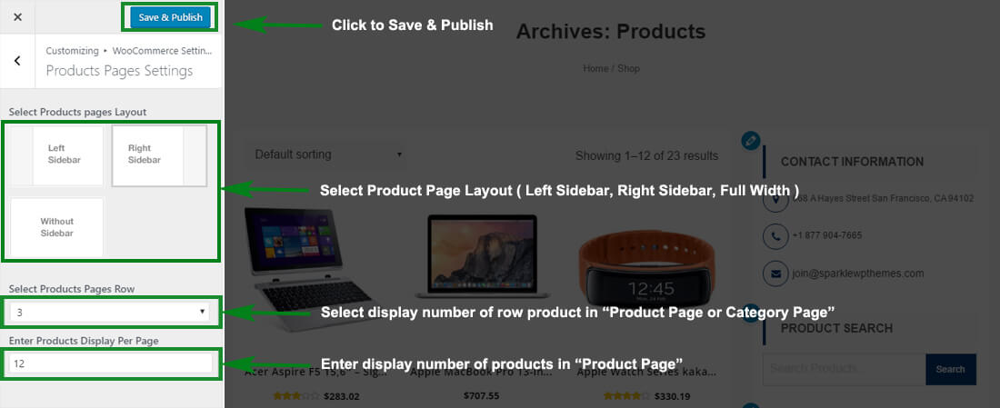
Single Products Page Settings
- Log into your WordPress site and opens the Administration Panel.
- Go to Dashboard > Appearance > Customize > WooCommerce Settings
- Open > WooCommerce Settings > Single Products Page Settings
- Single Products Page Settings > Manage Product Single Page all the options per as you want.
- Click Save & Publish.
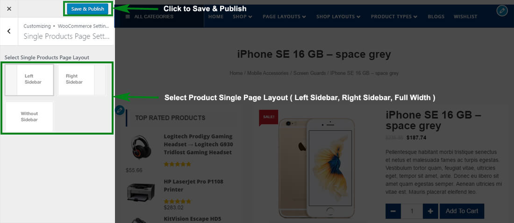
Configer Theme Typography Settings
- Go to Dashboard > Appearance > Customize
- Open > Customize > Theme Typography Settings
- Open Typography Settings > There is Different Tags Typography Settings(P,H1,H2,H3,H4,H5,H6) Options.
- Manage Settings/Options Per as You Want & Click on Button (Save & Publish)
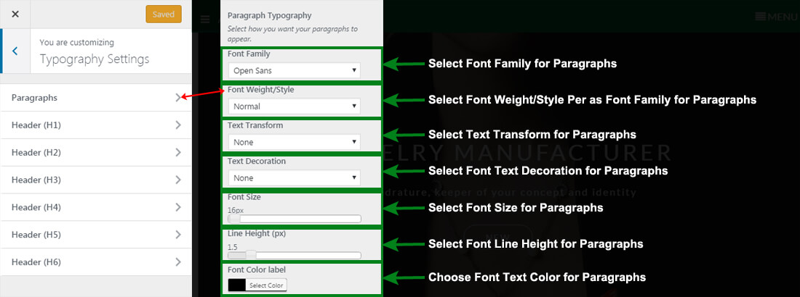
In this theme, we have included Metabox fields under Theme Layout for each page/post. They are:
Page/Post Layout Settings
-
This option allow to choose the page/post layout. This makes your specific page/post different from other pages/posts.
- Left Sidebar
- Right Sidebar
- Fulll Width
- Both Sidebar
This theme supports the Custom CSS, which overwrites the CSS of the main stylesheet file, so that you can apply some CSS to change the look of the site as you desire. Also, this changes will still remain even if you update the theme.
Additional CSS
- Go to Appearance > Customize > Additional CSS
- Open > Additional CSS > Add Custom CSS per as you want
- Click Save & Publish.